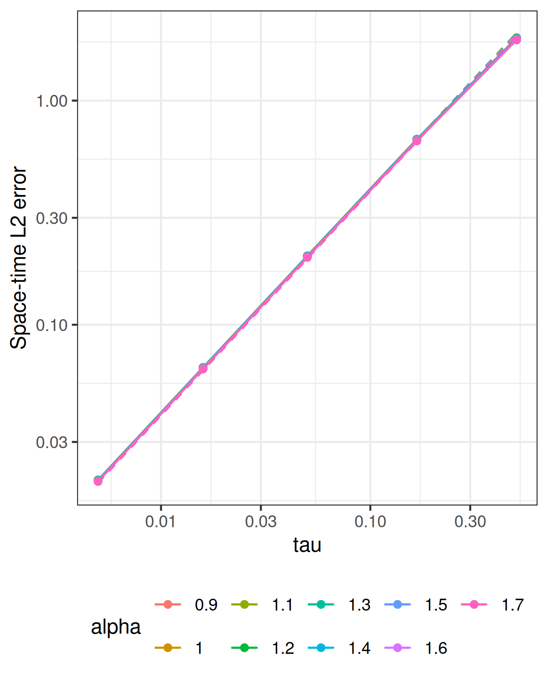

Experiments · Theory and functions
Knit displays the saved results. To run a new experiment, edit the Parameters for the next run chunk, then run the setup, parameters, and recompute chunks manually in that order. The computation loops, error calculations, plotting, and saving steps are written directly below. The recompute chunk overwrites the saved results and figures. Knit again to display them. Parameter and recompute chunks are skipped when knitting; the displayed settings always describe the saved results.
On the tadpole with stem length 1 and loop length 2, solve \[
u_t+\nu L^{\alpha/2}u=a_f A\sin(\omega t)e_7,
\qquad u(0)=a_0e_5,\qquad L=\kappa^2-\Delta_\Gamma.
\] The data contain finitely many smooth eigenfunctions; the
editable amplitudes are initial_amplitude and
forcing_amplitude, with sine factor AAA and
frequency OMEGA. Consistent P1 mass and stiffness matrices
are assembled on the tadpole. Every backward Euler step applies shifted
sparse matrix solves using the installed rSPDE BRASIL
poles, residues, and constant. Cholesky factors are reused, including
the mass-matrix factor for the constant contribution. Analytic sine–hat
loads and interval-averaged forcing are used.
The reported error is the right-constant space–time \(L_2\) error against the continuum solution, evaluated on the saved reference mesh and time grid. Centered coefficient moments accumulate this norm without changing the FEM time evolution. The reference modes evaluate the continuum solution only.
T_final <- 1
kappa <- 4
diffusion <- 1e-3
alpha_vector <- seq(0.5,1.9,0.2)
m_fixed <- 8L
tau_vector <- T_final/c(200L,80L,32L,13L,6L,2L)
h_fixed <- 1e-3
overkill_h <- 1e-5
overkill_time_step <- 1e-5
N_finite <- 4L
initial_amplitude <- 10
forcing_amplitude <- 10
AAA <- 1
OMEGA <- pi
workers <- 1L
error_verbose <- FALSE# Saved files overwritten by this computation.
output_file <- "data_files/errors_projected_tau_mat.RData"
figure_file <- "data_files/tikzpic/p_tau_nicer_tadpole_mat_with_mathpazo.png"
# Assemble FEM matrices and advance every backward Euler step.
stopifnot(N_finite >= 4, N_finite%%2 == 0, length(alpha_vector) > 0, all(is.finite(alpha_vector)),
all(alpha_vector > 0 & alpha_vector <= 2), length(m_fixed) == 1, m_fixed == floor(m_fixed))
for (alpha in alpha_vector[alpha_vector != 2]) brasil_coefficients(m_fixed, alpha/2)
adjusted_N_finite <- N_finite + N_finite/2 + 1
coeff_U_0 <- numeric(adjusted_N_finite)
coeff_U_0[5] <- initial_amplitude
coeff_FF <- numeric(adjusted_N_finite)
coeff_FF[7] <- forcing_amplitude
tau_targets <- tau_vector
time_grids <- lapply(tau_targets, function(target) {
make_time_grid(T_final = T_final, target_step = target)
})
tau_vector <- vapply(time_grids, function(grid) grid$time_step, numeric(1))
stopifnot(length(unique(tau_vector)) == length(tau_vector))
g_averages <- lapply(time_grids, function(grid) {
average_sine_forcing(grid$time_seq, A = AAA, omega = OMEGA)
})
# Assemble the reference-mesh mass matrix.
overkill_graph <- gets.graph.tadpole(h = overkill_h)
overkill_graph$compute_fem()
overkill_C <- overkill_graph$mesh$C
reference_grid <- make_time_grid(T_final = T_final, target_step = overkill_time_step)
overkill_time_step <- reference_grid$time_step
overkill_time_seq <- reference_grid$time_seq
graph <- gets.graph.tadpole(h = h_fixed)
graph$compute_fem()
C <- graph$mesh$C
L <- kappa^2 * C + graph$mesh$G
Psi <- graph$fem_basis(overkill_graph$get_mesh_locations())
stopifnot(all(coeff_U_0[-5] == 0))
U_0 <- project_u0_tadpole(graph, amplitude = coeff_U_0[5])
reference_eigen_params <- gets.eigen.params(N_finite = N_finite, kappa = kappa, alpha = alpha_vector[1],
graph = overkill_graph)
reference_eigenvalues <- reference_eigen_params$EIGENVAL
overkill_EIGENFUN <- reference_eigen_params$EIGENFUN
active_modes <- which(coeff_U_0 != 0 | coeff_FF != 0)
exact_basis <- overkill_EIGENFUN[, active_modes, drop = FALSE]
exact_initial <- coeff_U_0[active_modes]
exact_forcing <- coeff_FF[active_modes]
spatial_load <- coeff_FF[7] * assemble_e7_load_tadpole(graph)
error_projection <- prepare_reference_error(Psi, overkill_C, exact_basis)
m_values <- c()
# Loop over the refinement values and fractional exponents.
errors_projected <- matrix(NA_real_, length(tau_vector), length(alpha_vector))
for (j in seq_along(alpha_vector)) {
alpha <- alpha_vector[j]
beta <- alpha/2
exact_rates <- diffusion * reference_eigenvalues[active_modes]^beta
coefficients_at_time <- function(t) exact_modal_coefficients(t, exact_rates, exact_initial, exact_forcing,
A = AAA, omega = OMEGA)
cases <- run_reference_cases(seq_along(tau_vector), function(i) {
time_grid <- time_grids[[i]]
time_step <- time_grid$time_step
time_seq <- time_grid$time_seq
g_average <- g_averages[[i]]
m <- m_fixed
my_op_frac <- my.fractional.operators.frac(L = L, beta = beta, C = C, scale.factor = kappa^2,
m = m, time_step = time_step, diffusion = diffusion)
solve_fractional_evolution_error(my_op_frac, time_step, time_seq, U_0, spatial_load, g_average,
overkill_time_seq, coefficients_at_time, error_projection, verbose = error_verbose)
}, workers = workers)
errors_projected[, j] <- vapply(cases, base::identity, numeric(1))
}
# Save the errors together with the settings used for this run.
attr(errors_projected, "coefficient_source") <- "rSPDE BRASIL"
attr(errors_projected, "parameters") <- list(study = "tau", axis = tau_vector, alpha = alpha_vector,
m = m_fixed, diffusion = diffusion, kappa = kappa, T = T_final, reference_h = overkill_h, reference_tau = overkill_time_step,
N_finite = N_finite, initial_amplitude = initial_amplitude, forcing_amplitude = forcing_amplitude,
AAA = AAA, OMEGA = OMEGA, fixed = list(h = h_fixed))
dir.create(dirname(output_file), recursive = TRUE, showWarnings = FALSE)
save(errors_projected, file = output_file)
# Fit reference guides, draw the curves, and overwrite the saved figure.
errors <- errors_projected
axis <- tau_vector
alpha <- alpha_vector
study <- "tau"
frame <- expand.grid(row = seq_along(axis), column = seq_along(alpha))
frame$x <- axis[frame$row]
frame$error <- as.vector(errors)
frame$alpha <- factor(alpha[frame$column], levels = alpha)
guide <- frame
rate <- if (study == "h")
2 else 1
for (j in seq_along(alpha)) {
ids <- frame$column == j
constant <- exp(mean(log(errors[, j]/axis^rate)))
guide$error[ids] <- constant * guide$x[ids]^rate
}
plot <- ggplot2::ggplot(frame, ggplot2::aes(x, error, color = alpha, group = alpha)) + ggplot2::geom_line(data = guide,
linetype = "dashed") + ggplot2::geom_line() + ggplot2::geom_point() + ggplot2::scale_x_log10() +
ggplot2::scale_y_log10() + ggplot2::labs(x = study, y = "Space-time L2 error", color = "alpha") +
ggplot2::theme_bw() + ggplot2::theme(legend.position = "bottom")
dir.create(dirname(figure_file), recursive = TRUE, showWarnings = FALSE)
ggplot2::ggsave(figure_file, plot, width = 4, height = 5, dpi = 300, bg = "white")| T | kappa | diffusion | m | reference_h | reference_tau | fixed_h |
|---|---|---|---|---|---|---|
| 1 | 4 | 0.001 | 8 | 1e-05 | 1e-05 | 0.001 |
| initial_amplitude | forcing_amplitude | AAA | OMEGA |
|---|---|---|---|
| 10 | 10 | 1 | 3.141593 |
The reference temporal rate is one; the spatial mesh and rational order remain fixed throughout each refinement curve.

| alpha | reference | observed |
|---|---|---|
| 0.5 | 1 | 0.98927 |
| 0.7 | 1 | 0.98920 |
| 0.9 | 1 | 0.98909 |
| 1.1 | 1 | 0.98894 |
| 1.3 | 1 | 0.98871 |
| 1.5 | 1 | 0.98837 |
| 1.7 | 1 | 0.98788 |
| 1.9 | 1 | 0.98716 |
| tau | alpha = 0.5 | alpha = 0.7 | alpha = 0.9 | alpha = 1.1 | alpha = 1.3 | alpha = 1.5 | alpha = 1.7 | alpha = 1.9 |
|---|---|---|---|---|---|---|---|---|
| 5.0000e-03 | 2.0364e-02 | 2.0345e-02 | 2.0316e-02 | 2.0273e-02 | 2.0210e-02 | 2.0117e-02 | 1.9982e-02 | 1.9786e-02 |
| 1.2500e-02 | 5.0907e-02 | 5.0858e-02 | 5.0786e-02 | 5.0679e-02 | 5.0521e-02 | 5.0288e-02 | 4.9947e-02 | 4.9455e-02 |
| 3.1250e-02 | 1.2730e-01 | 1.2718e-01 | 1.2699e-01 | 1.2672e-01 | 1.2632e-01 | 1.2573e-01 | 1.2487e-01 | 1.2363e-01 |
| 7.6923e-02 | 3.1295e-01 | 3.1264e-01 | 3.1218e-01 | 3.1150e-01 | 3.1049e-01 | 3.0900e-01 | 3.0684e-01 | 3.0370e-01 |
| 1.6667e-01 | 6.7432e-01 | 6.7362e-01 | 6.7257e-01 | 6.7102e-01 | 6.6872e-01 | 6.6535e-01 | 6.6042e-01 | 6.5330e-01 |
| 5.0000e-01 | 1.9136e+00 | 1.9111e+00 | 1.9073e+00 | 1.9017e+00 | 1.8935e+00 | 1.8814e+00 | 1.8637e+00 | 1.8383e+00 |